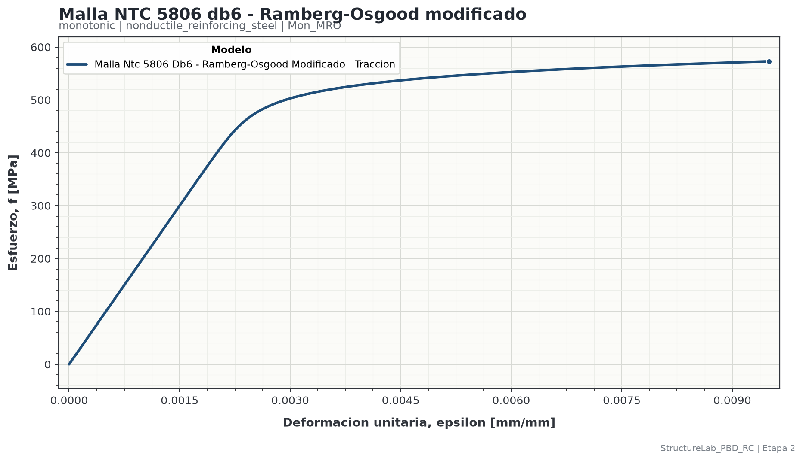

| Sección | Página |
|---|---|
| 1. Alcance, decisiones y fuentes | 3 |
| 2. Signos, unidades y dominio | 4 |
| 3. Ecuación constitutiva | 5 |
| 4. Inputs y validaciones | 6 |
| 5. Parámetros calculados | 7 |
| 6. Inversión numérica por bisección | 8 |
| 7. Rigidez tangente | 9 |
| 8. Ejemplo reproducible | 10-11 |
| 9. Política de compresión | 12 |
| 10. JSON, ejecución y outputs | 13-14 |
| 11. Verificación, código y referencias | 15 |
outputs/stage_02/.
`Mon_MRO` es una envolvente uniaxial, monotónica y sin memoria para alambre o malla electrosoldada de baja ductilidad. La implementación calcula la respuesta en tracción entre el origen y el punto último informado por el perfil.
Propiedades del perfil y controles numéricos.
Se resuelve σ para una deformación ε prescrita.
Esfuerzo, tangente, metadatos y curva trazable.
La forma funcional corresponde a la ecuación 6 del estudio de Carrillo, Díaz y Arteta sobre mallas electrosoldadas disponibles en Bogotá. El perfil canónico de 6 mm usa el percentil 2 de resistencia última y la deformación última media de la tabla 4.
| Dato | Valor del perfil de 6 mm | Uso |
|---|---|---|
| Módulo teórico, Es | 200 000 MPa | Pendiente elástica inicial |
| Resistencia última P2, fu | 573 MPa | Extremo de esfuerzo |
| Deformación última media, εu | 0.0095 | Extremo de deformación |
| Exponente | 20 | Forma de la transición |
| Magnitud | Tracción | Compresión |
|---|---|---|
| Deformación ε | Positiva | Negativa |
| Esfuerzo σ | Positivo | Negativo |
| Magnitud | Unidad | Observación |
|---|---|---|
| Longitud y diámetro | mm | El diámetro es metadato del perfil. |
| Esfuerzo y módulo | MPa | 1 MPa = 1 N/mm². |
| Deformación | mm/mm | Magnitud adimensional. |
| Tangente | MPa | dσ/dε. |
No existe extrapolación silenciosa. `strain_from_stress` rechaza esfuerzos fuera de [0, fu] y `stress_from_tensile_strain` rechaza deformaciones fuera de [0, εu].
La curva constitutiva se define únicamente con Es, fu,
εu y el exponente. El modelo no recibe fy_MPa.
La resistencia fy,ef se obtiene después como resultado de la idealización
bilineal de energía equivalente ASCE/FEMA; no es un parámetro de calibración de la
ecuación Ramberg-Osgood modificada.
La ecuación entrega deformación como función del esfuerzo. En el código,
shape_exponent representa n; el perfil publicado usa n = 20.
| Símbolo | JSON | Unidad | Significado |
|---|---|---|---|
| ε | strain | mm/mm | Deformación unitaria solicitada o calculada. |
| σ | stress_mpa | MPa | Esfuerzo uniaxial de tracción. |
| Es | Es_MPa | MPa | Módulo elástico inicial. |
| fu | fu_MPa | MPa | Resistencia máxima de tracción usada por el perfil. |
| εu | eps_u | mm/mm | Deformación correspondiente a fu. |
| n | shape_exponent | - | Exponente que controla la transición no lineal. |
El primer término es la contribución elástica. El segundo agrega deformación no lineal de manera progresiva hasta alcanzar exactamente el punto último. La formulación es monotónica y no almacena estado entre evaluaciones.
| Input | Obligatorio | Validación y función |
|---|---|---|
project_id | Sí | Identifica el proyecto de salida. |
case_id | Sí | Identifica el caso dentro del proyecto. |
model_id | Sí | Debe coincidir con el archivo: Mon_MRO. |
diameter_mm | No en la clase | Si se suministra, debe ser positivo. Trazabilidad del perfil. |
Es_MPa | Sí | Debe ser mayor que cero. |
fu_MPa | Sí | Debe ser mayor que cero. |
eps_u | Sí | Debe satisfacer εu > fu/Es. |
shape_exponent | Sí | Debe ser mayor que 1. |
idealization | Sí | Configura la idealización bilineal; no introduce una fluencia como dato. |
compression.policy | Sí | unsupported o hipótesis simétrica explícita. |
root_tolerance | No | Positiva; controla la bisección. |
max_iterations | No | Entero mayor o igual que 1. |
provenance | Sí | Fuente, ubicación, perfil y estado de calibración. |
Esta desigualdad garantiza que la escala de deformación no lineal sea positiva. Si no se cumple, la curva no representa una transición físicamente coherente entre el origen y el punto último.
Con A, la ecuación se escribe de forma compacta:
La fuente entrega ε como función de σ, pero el flujo de caracterización solicita σ para una ε prescrita. La implementación resuelve la raíz:
Para 0 ≤ εobjetivo ≤ εu, la raíz queda encerrada en [0, fu]. El programa comprueba este encerramiento antes de iterar.
Definir límites 0 y fu.
σm = (σi + σs)/2.
Calcular g(σm).
Conservar la mitad que contiene la raíz.
Salir cuando |g| ≤ tolerancia.
Error si se agotan las iteraciones.
| Control | Valor | Interpretación |
|---|---|---|
| root_tolerance | 1×10-12 | Tolerancia sobre deformación residual. |
| max_iterations | 200 | Límite determinista de iteraciones. |
El código evalúa la derivada analítica en el esfuerzo obtenido por bisección. No usa diferencias finitas durante la ejecución.
| ε [mm/mm] | σ [MPa] | Et [MPa] |
|---|---|---|
| 0.0010 | 199.999999 | 199 999.981 |
| 0.0030 | 502.799191 | 41 098.253 |
| 0.0050 | 543.244414 | 11 225.965 |
| 0.0070 | 560.046189 | 6 452.471 |
| 0.0095 | 573.000000 | 4 226.755 |
| Variable | Valor | Procedencia o función |
|---|---|---|
| Diámetro | 6 mm | Perfil de alambre ensayado. |
| Es | 200 000 MPa | Valor teórico adoptado por la fuente. |
| fu | 573 MPa | P2 de tabla 4 para 6 mm. |
| εu | 0.0095 | Media de tabla 4 para 6 mm. |
| n | 20 | Exponente de la ecuación 6. |
| Fracción de rigidez FEMA | 0.60 | Define el punto usado para calcular Eef. |
| Compresión | unsupported | No se genera rama negativa. |
| Puntos | 201 | Vector lineal de ε = 0 a εu. |
Primero:
Después se resuelve:
La bisección en [0, 573] MPa produce:
Stage 2 construye 201 deformaciones equiespaciadas desde 0 hasta 0.0095. Cada punto se evalúa de manera independiente; no existe estado acumulado ni se reordena un historial.

Con compression.policy: unsupported, cualquier ε negativa produce un error
de dominio. Aunque include_compression fuese verdadero, Stage 2 no dibuja
una rama que el modelo no soporta.
Solo se habilita con los tres controles siguientes:
| Control | Requisito |
|---|---|
| compression_strain_limit | Positivo, explícito y no mayor que εu. |
| justification | Texto no vacío que explique el uso. |
| explicit_acceptance | Debe ser true. |
"compression": {
"policy": "symmetric_prebuckling_assumption",
"compression_strain_limit": 0.002,
"justification": "Verificación numérica prepandeo.",
"explicit_acceptance": true
}
{
"stage_id": "stage_02",
"enabled": true,
"title": "Malla NTC 5806 db6 - Ramberg-Osgood modificado",
"units": {"length": "mm", "stress": "MPa", "strain": "mm/mm"},
"inputs": {
"project_id": "Modelos_constitutivos",
"case_id": "COL75X75FC28MPa",
"model_id": "Mon_MRO",
"parameters": {
"diameter_mm": 6.0,
"Es_MPa": 200000.0,
"fu_MPa": 573.0,
"eps_u": 0.0095,
"shape_exponent": 20.0
},
"idealization": {
"method": "asce_fema_energy_equivalent_stress_strain",
"stiffness_fraction": 0.60,
"tolerance": 0.005,
"search_points": 5000,
"yield_lower_ratio": 0.05,
"yield_upper_ratio": 1.00
},
"compression": {"policy": "unsupported"},
"numerical": {"root_tolerance": 1e-12, "max_iterations": 200},
"curve_generation": {
"points": 201,
"include_tension": true,
"include_compression": false
}
}
}
.\.venv_structurelab_pbd_rc\Scripts\python.exe scripts\run_stage_02.py
La ejecución procesa conjuntamente todos los JSON habilitados. Este instructivo permanece sin cambios; los resultados se publican bajo el proyecto y caso declarados.
outputs/stage_02/
└── Modelos_constitutivos/
└── COL75X75FC28MPa/
└── monotonic/
└── nonductile_reinforcing_steel/
└── Mon_MRO/
├── data/
├── figures/
└── reports/
| Archivo | Contenido |
|---|---|
| data/resolved_inputs.json | JSON original y valores resueltos para la ejecución. |
| data/calculated_parameters.yaml | Parámetros constitutivos derivados e idealización FEMA, incluidos fy,ef y εy,ef. |
| data/metrics.yaml | Rangos, conteos y estado de calibración. |
| data/curve.csv y curve.xlsx | ε, σ, tangente, dominio, fuente y advertencias por punto. |
| data/fema_bilinear_idealization.csv y .xlsx | Origen, fluencia efectiva y punto último de la idealización. |
| figures/response.png | Figura generada para esa corrida. |
| figures/response_fema_bilinear_idealization.png | Curva real e idealización bilineal superpuestas. |
| reports/model_report.yaml | Reporte técnico estructurado y archivos generados. |
| reports/model_report.pdf | Resumen legible específico de la ejecución. |
strain, stress_mpa, tangent_mpa,
branch, stress_state, compression_policy,
in_domain, source y calibration_status.
| Responsabilidad | Ubicación |
|---|---|
| Validación y ecuación | src/structurelab_pbd_rc/mechanics/materials/nonductile_reinforcing_steel/monotonic/modified_ramberg_osgood/model.py |
| Selección del modelo | src/structurelab_pbd_rc/mechanics/materials/nonductile_reinforcing_steel/factory.py |
| Curva y outputs | src/structurelab_pbd_rc/design/stages/stage_02_material_characterization.py |
| Input canónico | configs/stage_02/nonductile_reinforcing_steel/monotonic/Mon_MRO.json |
| Pruebas unitarias | tests/test_material_models/test_modified_ramberg_osgood.py |